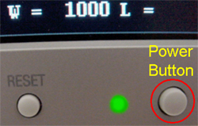

| Copyright 2005 General Electric Company. All rights reserved. |
Illustration 4: Monitor Power Button and LED

The monitor may perform an Auto Adjust referred to as the No Touch Auto Adjust function. This function is activated only when a new video signal (Analog input only) is received for the first time.
|